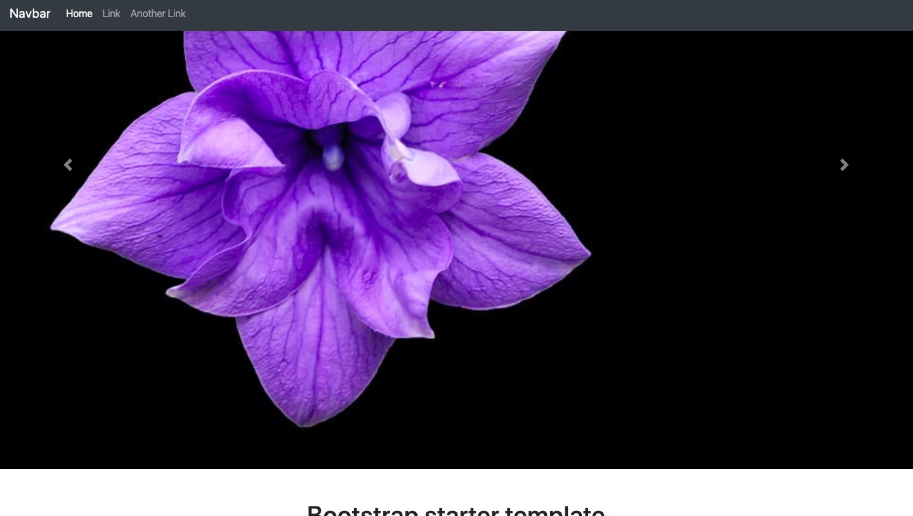
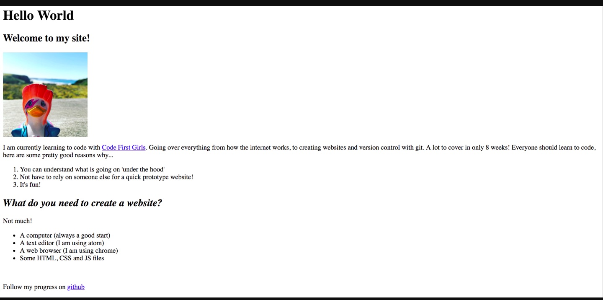

The photos above show just a snippet of the code used to help create this webiste.
In the First week of the codefirstgirls I had learnt to create my own html, the picture below represents the webiste that I created in the first week. You'll be able to view and see all the coding to the website below aswell this webiste and others by clicking on my github website listed at the bottom of the page."
Creating this website was hard and confusing at first by once it was explained properly by the demonstrators and reading the information of the slides I began to understand it alot easier.
In the second week of the course I learnt how to use css and how to link it the html. Css adds styles to the HTML document. Meaning that I can change the font of the text, the colour of the background and font, where everything is positioned.
If you look through the pictures above you can see the changes I have made to the website from week one. The changes include: background colour, font colour, font style, font size and when hovering over certain words they enlarge. You'll be able to see this feature by clicking on this website: Website2
In the third week we learnt about user experience and user interface. User experince is:About the psychology of how usable a product is whereas user interface is about the About the aesthetics of a design. For remainer of the session we were designing the websites.
The foruth week I learnt about version control. Version control is:
We also created a github which is a form of version control so that our files can get backed up as they are being edited which is good as our files can be backed up and shared between the groups
In the fifth week I learnt about bootstrap. Bootstrap is a framework which contains ready made CSS and JavaScript files with style solutions. We linked bootstrap to html and created a different website which allowed me to experiment with the styles. You can see this by looking at the pictures below.
The picture show that I used a carousel with indictors however what the photos dont show you is that I used a fade effect which you can see by looking at the pictures on top of the page.
In this week I learnt about JavaScript and JQuery. JavaScript is used to accomodate a range of thinking style and it is full-stack of langauge. JQuery is a library containing ready-made Javascript functions you can use out-of-the-box.
This week was about bringing all the knowledge I had gained throughout the weeks and making one final website which is this website.